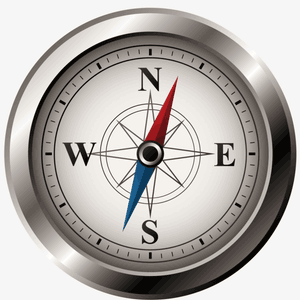
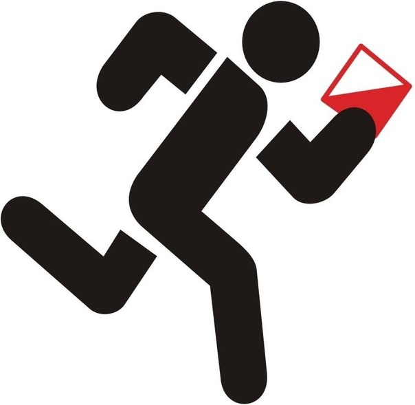

Что такое спортивное ориентирование?
Спортивное ориентирование — это вид спорта, в котором участники с помощью карты и компаса должны пройти по заданному маршруту.
Причины заниматься спортивным ориентированием:
- Развитие критического мышления
- Физическая подготовка
- Поездки с хорошей компанией
История
Спортивное ориентирование как вид спорта зародилось в странах Скандинавии в конце XIX века. В 1893 году впервые прошли официальные соревнования по бегу по пересечённой местности среди военнослужащих шведской армии под Стокгольмом

Примеры соревнований
- Летние чемпионаты
- Зимние чемпионаты
- Международные турниры
| ◪ | Соревнование | Фото |
|---|---|---|
|  | 18 октября состоялись соревнования по спортивному ориентированию в зачет Универсиады учреждений высшего профессионального образования 2024-2025 учебного года. | Фото |
|  | 7-8 сентября 2024 года на территории Орловского муниципального округа ДСОЛ «Ветерок» (д. Ивановская, ул. Центральная 1Б) состоялись Чемпионат и первенство Орловской области по спортивному ориентированию. | Фото |
 |
С 16 по 28 апреля состоялись чемпионат и первенство города Орла по спортивному ориентированию «Золотые звёзды Орловщины» | Фото |